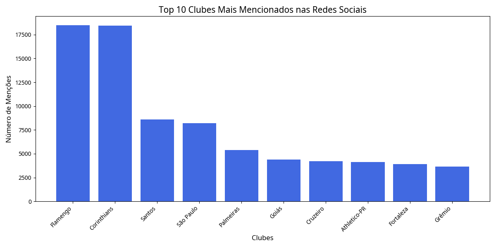
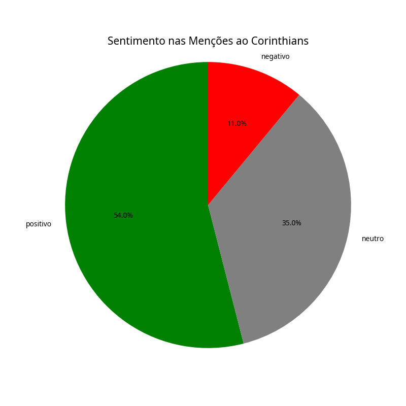
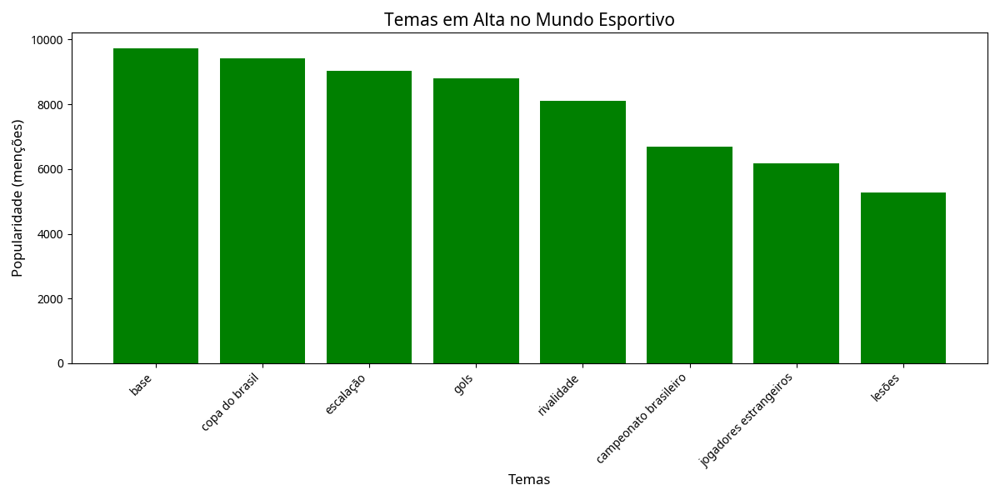
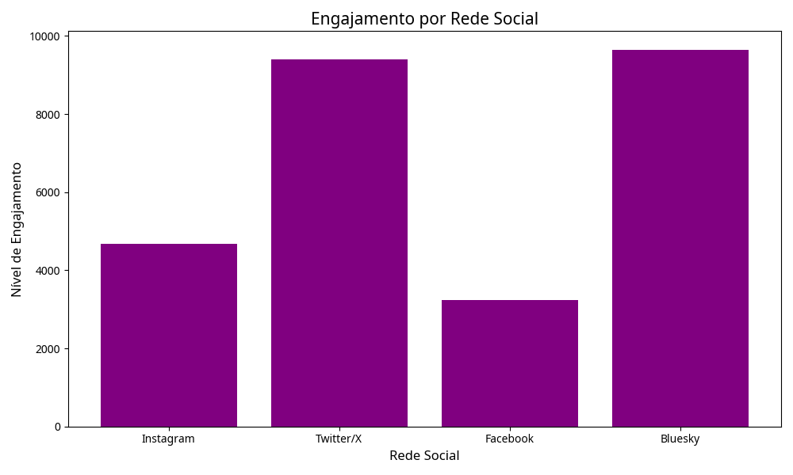

"O retorno do filho pródigo! 🔥 Neymar está de volta ao Santos e a torcida não fala de outra coisa. Será que o craque vai conseguir repetir os feitos da primeira passagem pelo Peixe? Acompanhe a análise completa hoje às 19h no Canal GOAT! #NeymarNoSantos #CanalGOAT"
Dashboard
Assistente IA
5
Tendências Emergentes
291%
Maior Crescimento
18.5k
Menções Monitoradas
3
Alertas Importantes
Tendências Emergentes
Neymar no Santos
291%Sentimento: Positivo (54%)
Instagram
Twitter/X
Técnico da Seleção
194%Sentimento: Neutro (35%)
Twitter/X
Facebook
Arbitragem VAR
136%Sentimento: Negativo (65%)
Twitter/X
Bluesky
Futebol Feminino
89%Sentimento: Positivo (70%)
Instagram
Facebook
Jogador Revelação
63%Sentimento: Positivo (58%)
Instagram
Twitter/X
Sugestões de Posts
"PESQUISA EXCLUSIVA: Entrevistamos 50 jornalistas esportivos sobre quem deveria ser o próximo técnico da Seleção Brasileira. O resultado surpreendeu! Confira a análise completa hoje às 18h no Canal GOAT. #SeleçãoBrasileira #NovoTécnico #FutebolBrasileiro"
"A polêmica não para! 🔍 Mais um fim de semana de decisões controversas do VAR no Brasileirão. Estamos analisando os lances mais discutidos da rodada e queremos saber: Você é a favor ou contra o uso do VAR no futebol brasileiro? Participe do debate! #VARnoBrasil #Arbitragem"
Clubes Mais Mencionados

Análise de Sentimento - Corinthians

Temas em Alta

Engajamento por Rede Social

Alertas Recentes
NOVO: Detecção de crise potencial - Aumento de 136% em menções negativas sobre "Arbitragem VAR" nas últimas 24 horas.
OPORTUNIDADE: O tema "Neymar no Santos" está em alta com sentimento positivo. Recomendamos criar conteúdo sobre este tema nas próximas 6 horas.
INFORMAÇÃO: A hashtag #CopadoBrasil está entre os trending topics no Twitter/X hoje. Considere incluí-la em seus posts sobre as partidas de hoje.